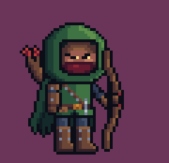
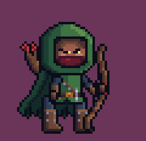
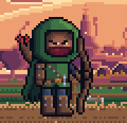

El Ranger nuevo, junto al actual y a los enemigos
De izquierda a derecha: el Ranger nuevo quieto y con el arco a tope, el Ranger actual, y tres enemigos (templario, cazador furtivo, monje).

De izquierda a derecha: el Ranger nuevo quieto y con el arco a tope, el Ranger actual, y tres enemigos (templario, cazador furtivo, monje).
Las mismas que usa el juego, con sus tiempos. Los disparos tensan hasta la mejilla con el arco muy doblado; al soltar, la cuerda chasquea y la mano sale despedida hacia atrás.


